The Chronicles of Ruthenia — a 15th-century Rus' RPG
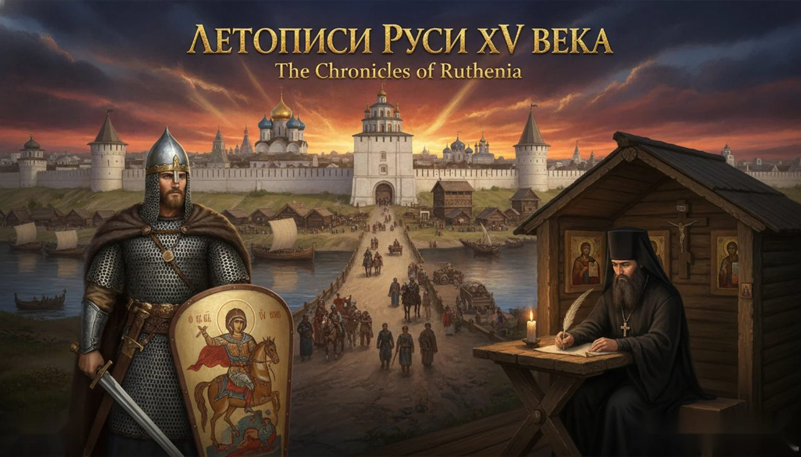
Where mathematics meets storytelling
The Chronicles of Ruthenia is a unique project in which the Godot game engine (desktop version) handles all the math: dice rolls, damage calculation, hit chances, skill and survival checks. Meanwhile an AI Narrator (a local llama model or a cloud LLM) acts as an endlessly creative Game Master, describing the world, dialogue and consequences of your actions. The browser demo on this page is built with Phaser 3.
But most importantly — strict historical authenticity. A RAG knowledge base compiled from hundreds of historical books and articles keeps the neural network from hallucinating and inventing facts. Everything that happens in the game is checked for historical accuracy.
RAG Historical Knowledge Base
A multi-source Retrieval-Augmented Generation system filled with real historical sources on 15th-century Rus' and world history. The AI does not invent — it selects from verified facts.
BRP Universal Game Engine d100
The mathematically rigorous Basic Roleplaying system, carefully adapted to the 15th-century Rus' setting, with realistic odds, skills and combat mechanics.
LLM Narrator
A local neural network on llama.cpp server, or any cloud model via an OpenAI-compatible API. Narrative quality depends on the chosen model and its weights.
Realistic Turn-Based Combat
Graphical combat in 2.5D isometric view or a text mode. Historically accurate weapons, armour and clothing. You can die from a single well-placed blow to a vulnerable spot.
A Living Historical World
Every world event is reflected in the game: rumours from merchants, news from foreign guests, political shifts. Day and night, seasons and weather change. Realistic roads and distances.
Smart Memory Management
Rolling Summary + State Injection around the model's context window. No context overflow — the AI always remembers the key events of your story.
Chronicle 1400–1505
Key events of the era — from Edigu's invasion to the end of Ivan III's reign. The “Quest for the Lost Icon” scenario is woven into this chronicle: rumours of great battles reach the village with the trade caravans.
15th-century Rus' — an age of change
The age of “gathering of the Russian lands” around the Principality of Moscow, of feudal wars and of casting off the Horde yoke. Three grand princes define the epoch.
105 years of the epoch
Select a prince on the ribbon — 105 years of the era between them.
The game accounts for real historical events of 15th-century Rus' and all major world events. Rumours from merchants, tales of foreign guests, political changes — all of it is reflected in the game world, and none of it can be missed.
Historical Maps of Rus'
The game uses realistic historical terrain maps of 14th–16th century Rus'. Below is a map of the village's game neighbourhood: click a marker to learn about the area.
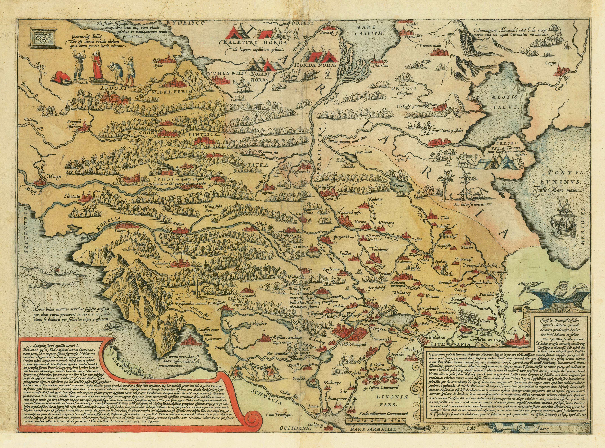
Map of Russia by Anton Wied and Ivan Lyatsky
1542–1555
The first detailed map of the Muscovite state, commissioned by Sigismund II Augustus.
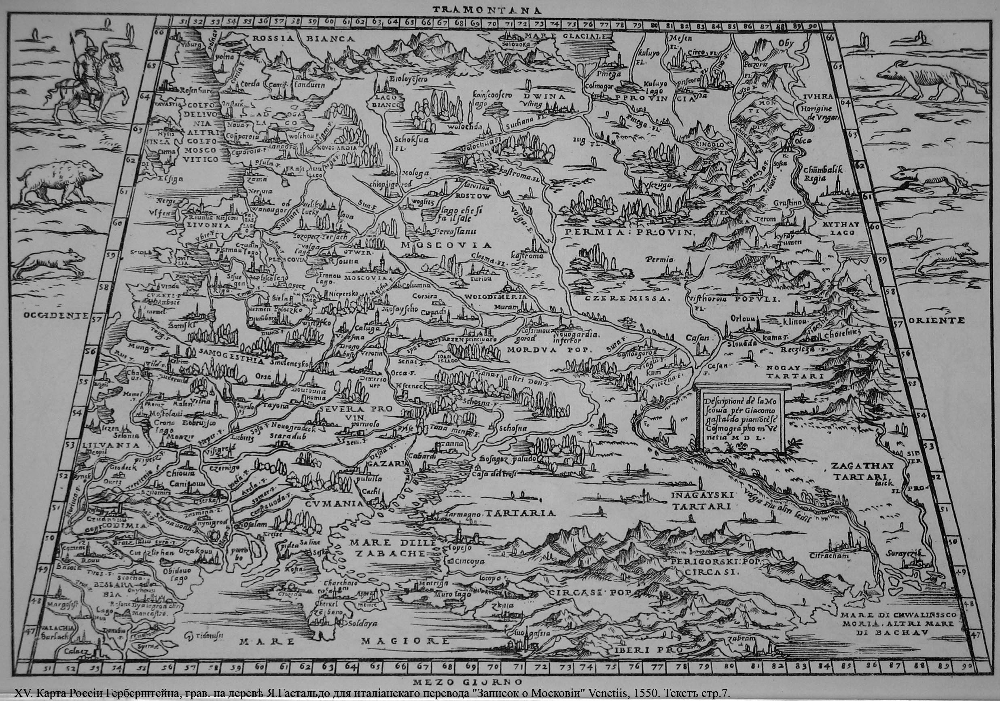
Map of Russia by Sigismund von Herberstein
1550
A map from “Notes upon Russia” by the Austrian diplomat Sigismund von Herberstein.
Basic Roleplaying Universal Game Engine SRD (d100)
The mathematically rigorous BRP system (d100). All rolls, damage, skills and checks are computed by the Godot engine. The neural network only describes the outcome.
d100 success levels
- Luck — 1/20
- Special — 1/5
- Success — ≤ skill
- Failure — > skill
- Fumble — 96+
Hit locations (d20)
- 1–4: Right leg
- 5–8: Left leg
- 9–11: Abdomen
- 12: Chest
- 13–15: Right arm
- 16–18: Left arm
- 19–20: Head
Damage bonus
- STR+SIZ 2–12: −1D6
- STR+SIZ 13–16: −1D4
- STR+SIZ 17–24: none
- STR+SIZ 25–32: +1D4
- STR+SIZ 33–40: +1D6
- STR+SIZ 41–56: +2D6
- STR+SIZ 57+: +3D6+
Major wound (d100)
Damage ≥ ½ HP triggers a d100 table with stat loss by body zone. Knockout “take alive” — a captive yields ransom under the 1497 Sudebnik.
Interactive d100 roll
Tap the die
How it works
Project architecture
- Godot game engine — manages the game environment, loads neural networks, performs all calculations and supervises the historical accuracy of prompts via the RAG base.
- Local neural network — downloaded from a Hugging Face repository on first launch. Works offline through llama.cpp server.
- Cloud models — connect any model with your OpenAI-compatible API key by specifying the provider address and model name.
- RAG knowledge base — compiled from several hundred historical books and articles. Verifies every prompt for historical accuracy before it reaches the neural network.
- BRP d100 — the Chaosium BRP Universal Game Engine SRD roleplaying system. All rolls, damage, skills and checks are computed by the engine.
- Built-in embedding model — mxbai-embed-large-v1 · Q5_K_M · dim 1024 · cosine search. A second neural network for the RAG knowledge base.
- Rolling Summary + State Injection — intelligent context-window management that prevents overflow while preserving key events.
- Full list of neural network models:
- Local: Saiga Llama 3 8B (Q2_K/Q4_K_M/Q8_0), Saiga Gemma 3 12B (Q3_K_M/Q4_K_M/Q6), Vikhr-Nemo 12B (Q4_K_M/Q5_K_M/Q6), Vikhr-YandexGPT 5 Lite 8B (Q4_K_M), Gemma-4 E4B-Uncensored (Q4_K_M)
- Cloud: Any cloud neural network can be connected using an OpenAI-compatible API key.
- Embedder (knowledge base): mxbai-embed-large-v1 · Q5_K_M · dim 1024 · cosine search
Hugging Face
The chosen local model is downloaded from an open repository on first launch.
OpenAI-compatible API
Connect any cloud models: OpenAI, Anthropic, Mistral, local servers and more.
BRP SRD by Chaosium
The official Basic Roleplaying system — a d100 roleplaying mechanic proven over decades.
20 key features
Where math meets storytelling
Godot computes rolls and damage; the neural network describes events and carries dialogue.
Strict historical authenticity
The RAG base keeps the AI from inventing — only verified historical data.
Local neural network
Works offline after downloading the model from Hugging Face.
Cloud models
Connect any LLMs via an OpenAI-compatible API key.
Smart memory management
Rolling Summary + State Injection around the context window.
Historical accuracy checks
At every stage: from character creation to NPC actions.
Turn-based combat
Real weapons and armour. Death from a single blow to a vulnerable spot.
Visual combat modes
Graphical 2.5D isometric view or the text mode of classic tabletop RPGs.
RAG from hundreds of books
The knowledge base is compiled from several hundred historical sources.
BRP d100
The Basic Roleplaying Universal Game Engine SRD system.
World events
All major historical events are reflected in the game world.
Rumours and news
Events arrive through merchants, guests and other sources.
Survival system
Rest, food, thirst, horse fodder, illnesses, poisoning.
Realistic roads
Distances between towns match historical maps.
Day and night cycle
Seasons and weather affect gameplay.
Reputation system
Local and global reputation, the attitude of those around you.
Built-in encyclopedia
A kind of “Rupedia” — every milestone of 15th-century Russian and world history.
Session log
A full log of events, dialogue and battles. Export to a text file.
Historical maps
Realistic maps of 14th–16th century Rus' and its surroundings.
llama.cpp server
A local neural network server with an OpenAI-compatible API over HTTP.
Ready to enter the chronicle?
15th-century Rus' awaits its hero. Whether you become a boyar, a warrior, a merchant or a wanderer — the story is written by every decision you make.
Take a look at the game's world
A short promo video about The Chronicles of Ruthenia — concept, atmosphere, gameplay.
Game screenshots
Frames from the browser demo — the village, interiors, combat, character creation and locations of 15th-century Rus.
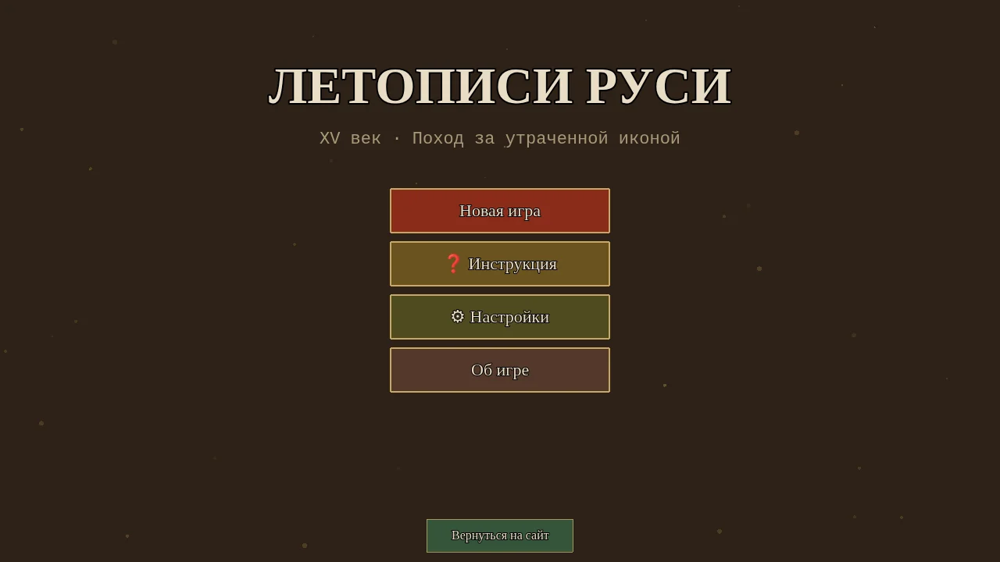
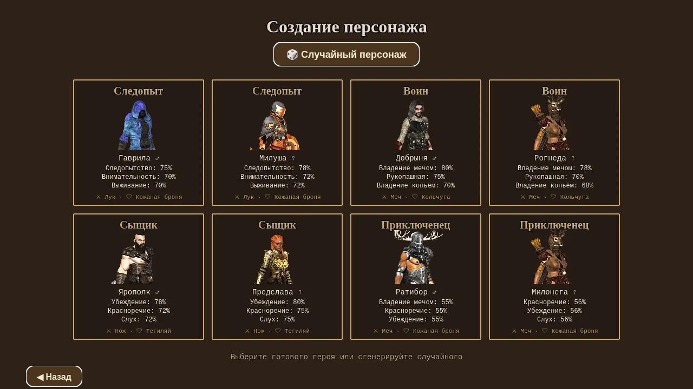
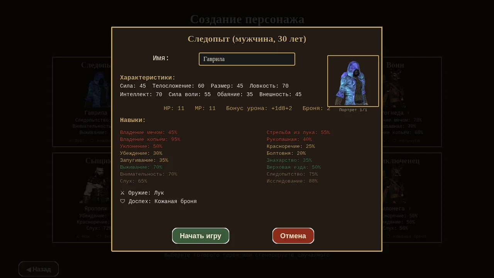
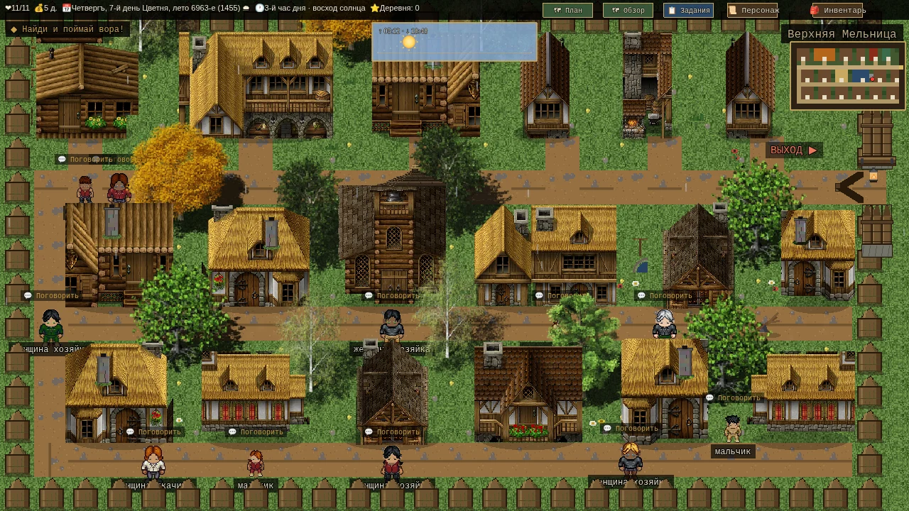
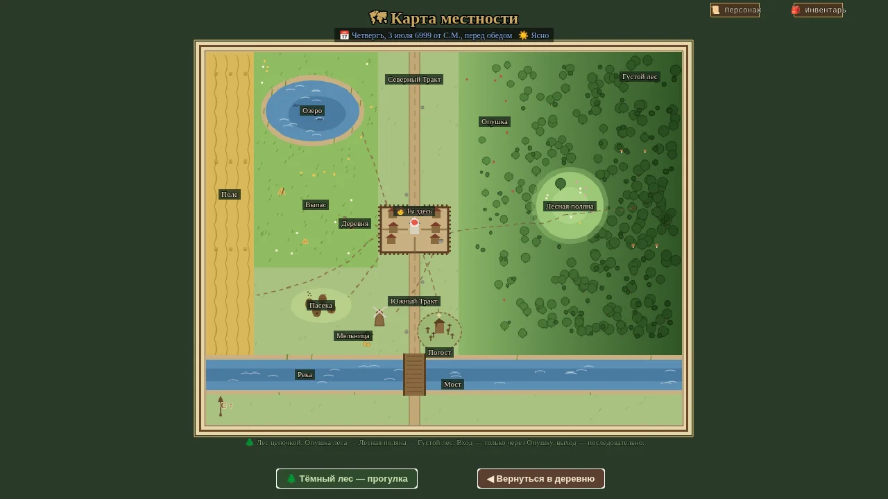
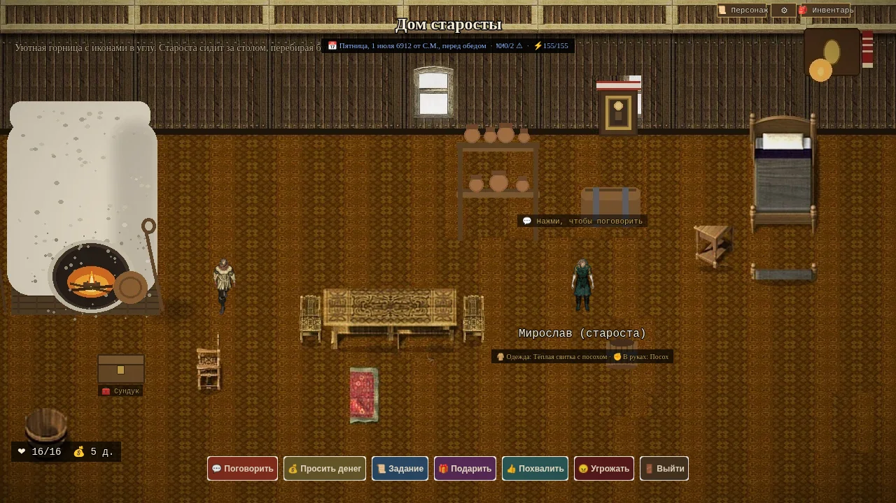
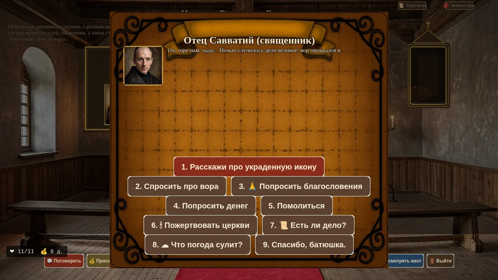
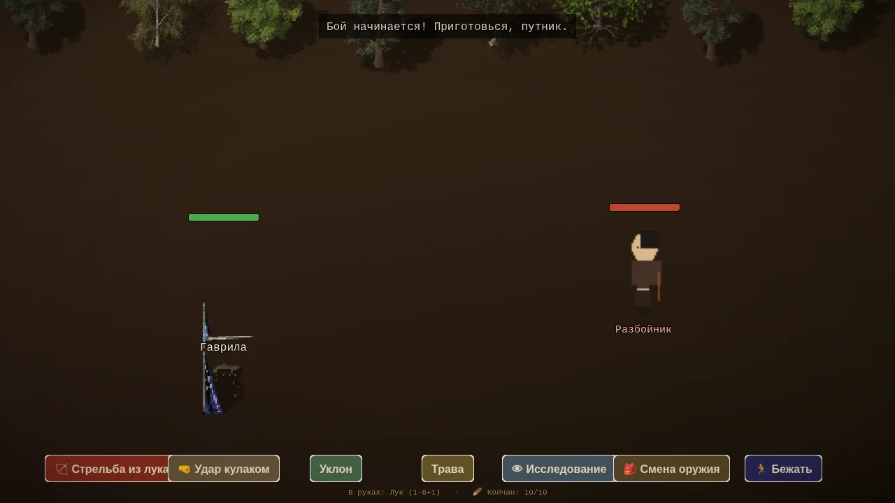
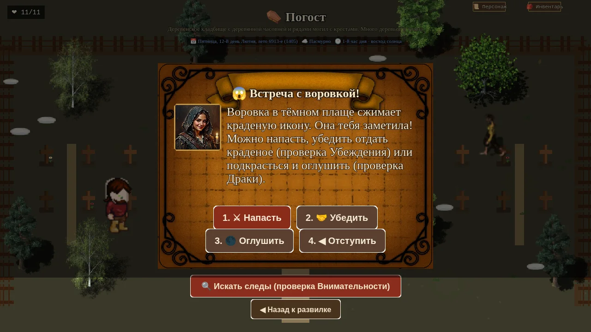
Browser demo
Try the BRP d100 combat system right in your browser! Guide a traveller through a village of 15th-century Rus', talk to NPCs and face a bandit in combat.
The browser demo is built on the Phaser 3 engine. The main game is developed on Godot Engine. Note: in-game text is currently in Russian; full English localization is planned.
The game opens in a separate window. Controls: WASD/arrows — move, E — interact, ESC — exit.
Size: 1280×720. Fullscreen mode (F11) recommended.
Support the project
Funds will go toward AI testing hardware, knowledge-base content and development.